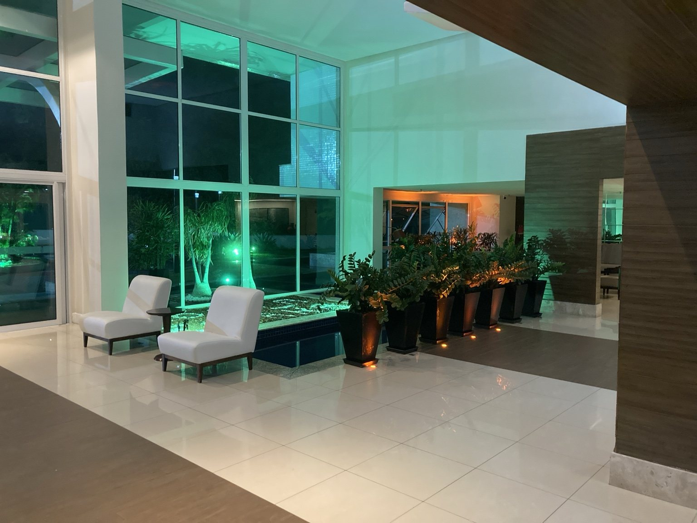

Brinquedoteca e biblioteca infantil
Estudo de uso infantil com biblioteca/brinquedoteca, tratado como hipótese visual a ser validada tecnicamente.

Situação atual / referência inicial do ambiente.
Clique aqui para ver a imagem maior

Proposta visual para brinquedoteca e biblioteca infantil.
Clique aqui para ver a imagem maior
Brinquedoteca e biblioteca infantil
A composição original desta área é bastante problemática. Ela ocupa espaço, cria ruído visual e não agrega quase nada ao desenho do prédio. Em um ambiente grande, nobre e subutilizado, a solução atual parece solta, sem propósito claro e sem força arquitetônica.
A proposta de um espaço kids, por outro lado, pode ser lida como uma obra de arquitetura e não apenas como a colocação de brinquedos em uma área vazia. Bem desenhado, o espaço infantil pode se tornar bonito de olhar, organizado, transparente e integrado à linguagem do edifício.
Há também uma dimensão simbólica importante: o público do prédio se tornou mais heterogêneo, com famílias, crianças e diferentes formas de uso dos espaços comuns. Incorporar essa realidade com qualidade é uma forma de atualizar o condomínio sem descaracterizá-lo.
A localização também tem lógica: é uma área grande, com pouca circulação, quase fantasma em determinados momentos, e longe dos apartamentos — o que reduz o risco de conflitos por barulho. Em vez de manter um vazio pouco útil, o condomínio pode estudar uma ocupação mais inteligente, bonita e funcional.
A proposta deve ser analisada com cuidado, considerando segurança, acústica, ventilação, supervisão, regras de uso e custo. Mas o conceito geral é forte: transformar uma área sem expressão em um espaço infantil arquitetonicamente qualificado.